Applies common theming to a ggplot2 chart. It's based on ggplot2::theme_minimal().
Usage
ggplot2_theme(
base_size = 11L,
base_family = pal::pkg_config_val(key = "font_family_body", pkg = this_pkg),
base_line_size = base_size/22L,
base_rect_size = base_size/22L,
axis.title.x = ggplot2::element_text(margin = ggplot2::margin(t = 20L, r = 0L, b = 0L,
l = 0L), inherit.blank = TRUE),
axis.title.y = ggplot2::element_text(margin = ggplot2::margin(t = 0L, r = 20L, b = 0L,
l = 0L), inherit.blank = TRUE),
legend.box.margin = ggplot2::margin(),
legend.box.spacing = ggplot2::element_blank(),
legend.margin = ggplot2::margin(),
legend.position = "bottom",
legend.spacing = grid::unit(x = 0, units = "npc"),
plot.margin = ggplot2::margin(),
...
)Arguments
- base_size
base font size, given in pts.
- base_family
base font family
- base_line_size
base size for line elements
- base_rect_size
base size for rect elements
- axis.title.x, axis.title.y
Labels of axes (
ggplot2::element_text()). Specify all axes' labels (axis.title), labels by plane (usingaxis.title.xoraxis.title.y), or individually for each axis (usingaxis.title.x.bottom,axis.title.x.top,axis.title.y.left,axis.title.y.right).axis.title.*.*inherits fromaxis.title.*which inherits fromaxis.title, which in turn inherits fromtext.- legend.box.margin
margins around the full legend area, as specified using
margin()- legend.box.spacing
The spacing between the plotting area and the legend box (
unit)- legend.margin
the margin around each legend (
margin())- legend.position
the default position of legends ("none", "left", "right", "bottom", "top", "inside")
- legend.spacing
Spacing between legends (
unit).legend.spacing.x&legend.spacing.yinherit fromlegend.spacingor can be specified separately.- plot.margin
margin around entire plot (
unitwith the sizes of the top, right, bottom, and left margins)- ...
Further arguments passed on to
ggplot2::theme().
Value
An object of class theme.
See also
Other plot theming functions:
ggplot2_geom_defaults(),
ggplot2_theme_html(),
plotly_layout()
Examples
sysfonts::font_add_google(name = "Alegreya Sans")
showtext::showtext_auto()
ggplot2::ggplot(data = mtcars,
mapping = ggplot2::aes(x = mpg,
y = cyl)) +
ggplot2::geom_point() +
salim::ggplot2_theme(base_size = 12)
